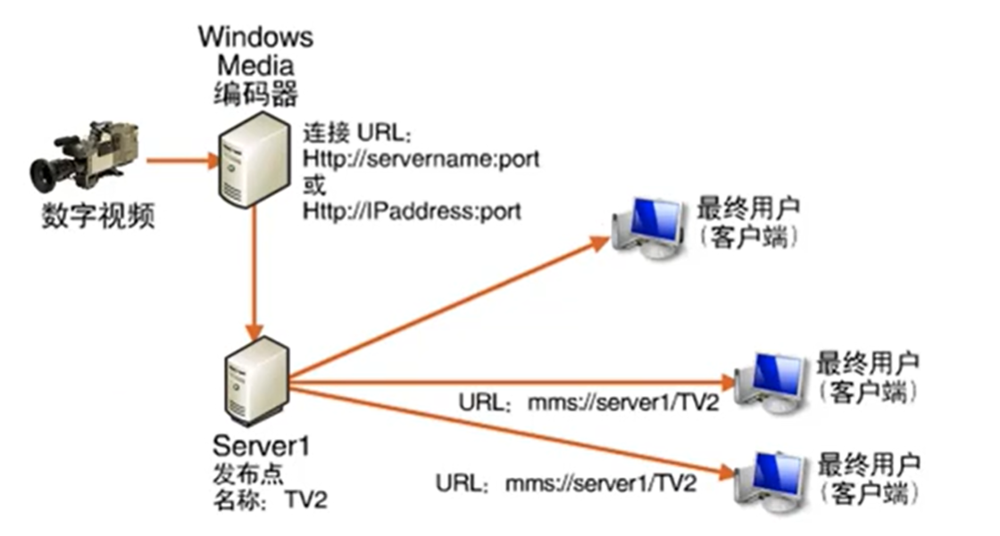
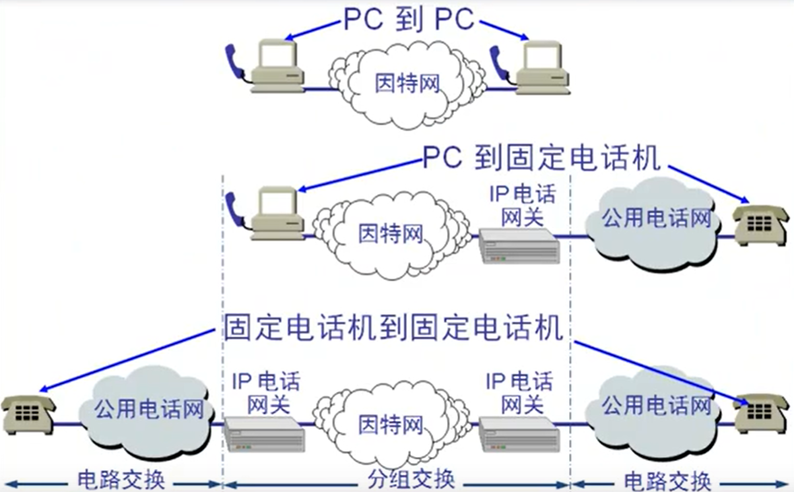
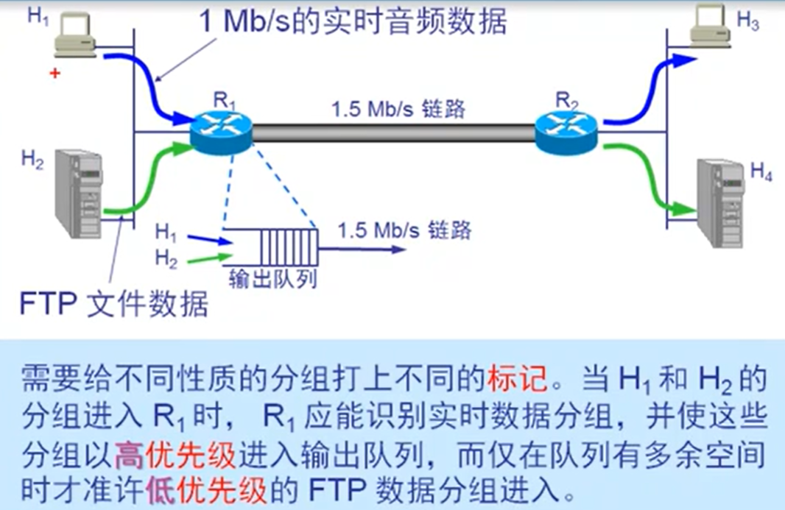
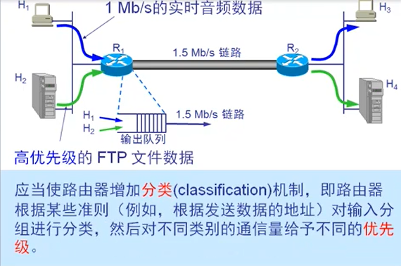
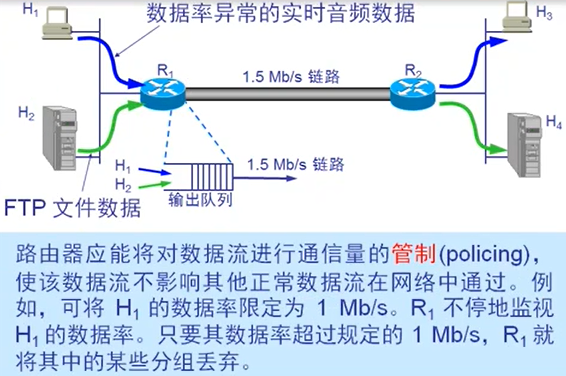
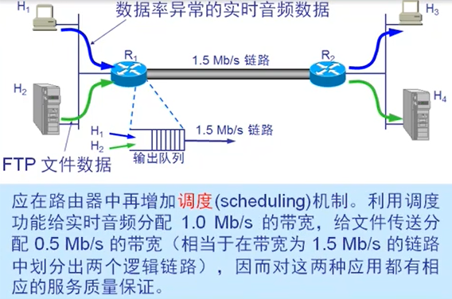
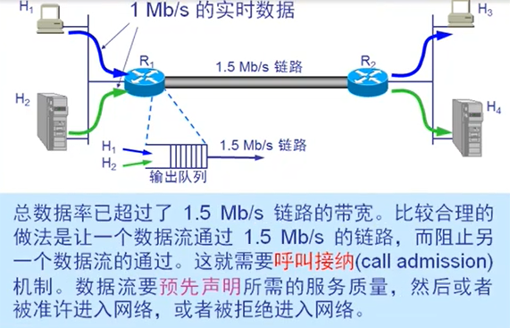
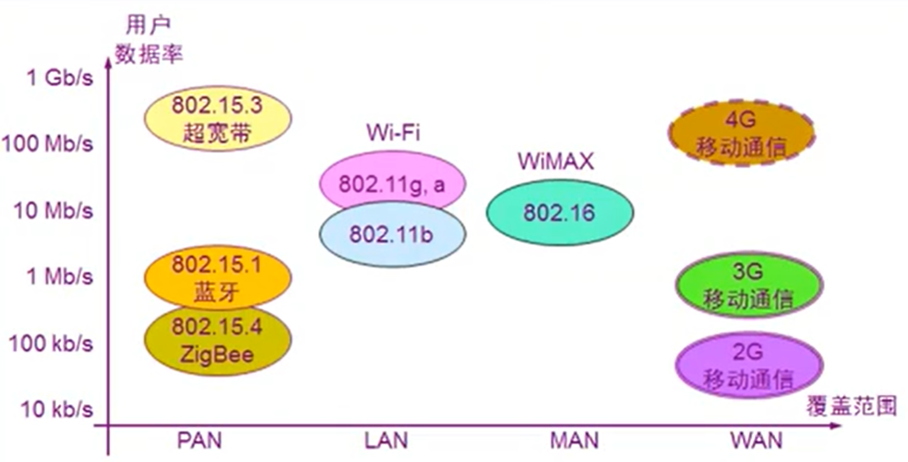
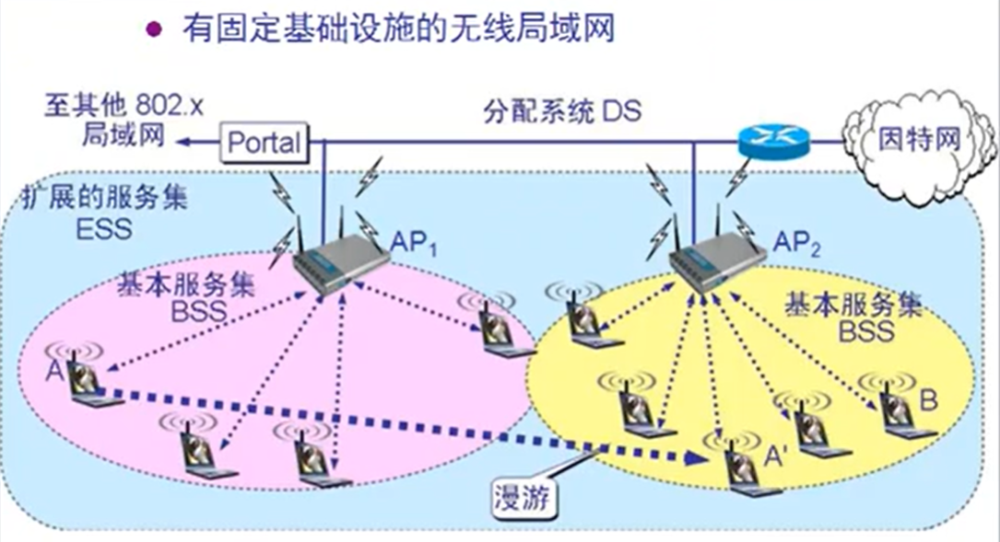
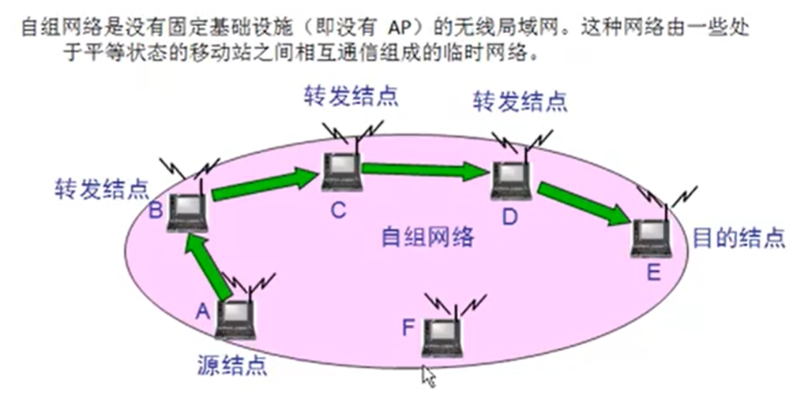

音视频传输与无线网络 链接到标题
因特网如何传输音视频 链接到标题
Internet 上传输音频视频面临的问题 链接到标题
- 音频视频 占用的带宽高 网速恒定 延迟低
- 数据信息 对带宽要求低 对于网速是否恒定或延迟要求不高
因特网提供的音视频服务种类 链接到标题
- 流式(streaming)存储音频/视频—边下载 边播放
- 流式实况音频/视频—边录制边发送，通过网络，现场直播

- 交互式音频/视频—实时交互式通信
IP 电话概述 链接到标题
狭义的 IP 电话就是指在 IP 网络上打电话。所谓 IP 网络就是使用 IP 协议的分组交换网的简称
广义的 IP 电话则不仅仅是电话通信，而且还可以是在 IP 网络上进行交互式多媒体实时通信(包括话音，视像等)，甚至还包括即时传信 IM(Instant Messaging)。
IP 电话的连接方法 链接到标题

IP 电话通话质量 链接到标题
IP 电话的通话质量主要由两个因素决定，一个是通话双方端到端的时延和时延抖动，另一个是话音分组的丢失率。但这两个因素是不确定的，是取决于当时网络上的通信量。
经验证明，在电话交谈中，端到端的时延不应超过 250ms，否则交谈者就能感到不自然。
改进“最大努力交付”服务 链接到标题
网络层的主要目的就是“尽最大努力交付”，对于信息的优先级不考虑，为了优先传播音视频，应用层需要对其进行改善。服务质量 QoS 是服务性能的总效果，此效果决定了一个用户对服务的满意程度。因此在最简单的意义上，有服务质量的服务就是能够满足用户的应用需求的服务。
服务质量可用若干基本的性能指标来描述，包括可用性，差错率，响应时间，吞吐量，分组丢失率，连接建立时间，故障检测和改正时间等。服务提供者可向其用户保证某一种等级的服务质量。
服务器如何实现优先传输音频或视频 链接到标题
- 基于标记的优先级确认

- 基于分类的优先级确认

- 流量管制机制

- 调度机制

- 呼叫接纳

无线网络 链接到标题
几种无线网络的比较 链接到标题

PAN：个人局域网，LAN：无线局域网，MAN：无线城域网，WAN：无线广域网
无线局域网的组成 链接到标题

一个基本服务集 BBS 包括一个基站和若干个移动站，所有的站在本 BBS 以内都可以直接通信，但在和本 BBS 以外的站通信时，都要通过本 BBS 的基站。基本服务集内的基站叫做接入点 AP(Access Point).当网络管理员安装 AP 时，必须为该 AP 分配一个不超过 32 字节的服务集标识符 SSID 和一个信道。一个基本服务集可以是孤立的，也可通过接入点 AP 连接到一个主干分配系统 DS(Distribution System),然后再接入到另一个基本服务集，构成扩展的服务集 ESS(Extended Service Set)。
移动自组网络 链接到标题
